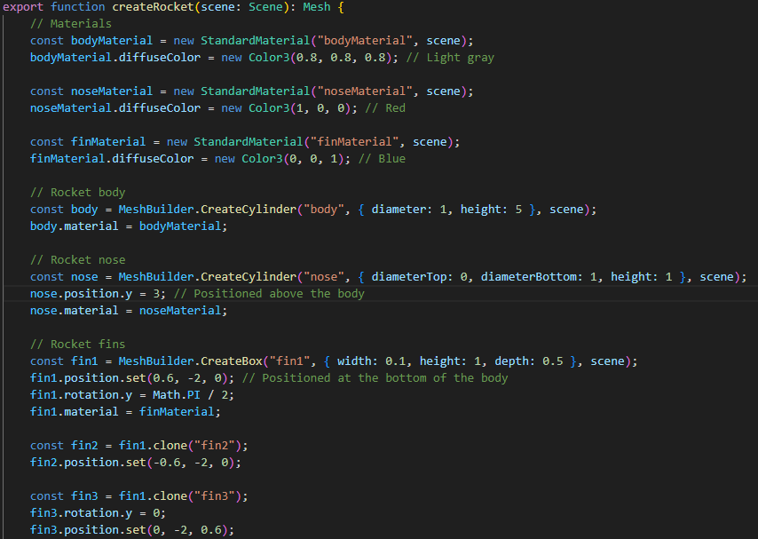
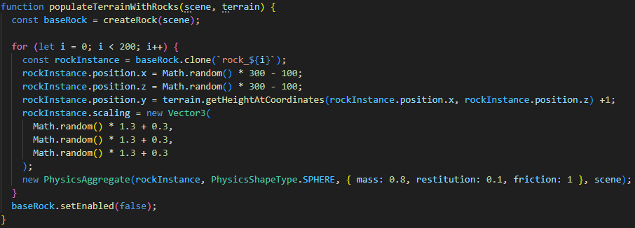
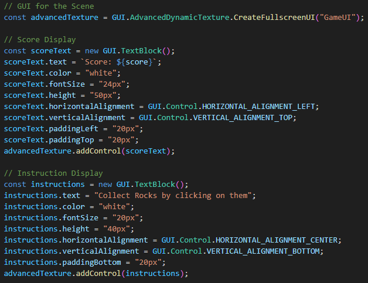
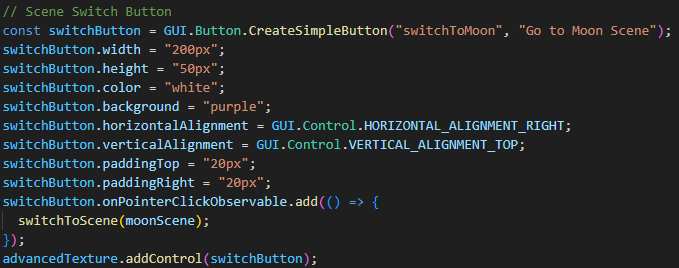

Each of these elements demonstrates key features of Babylon.js, such as scene transitions, dynamic camera controls, physics integration, and object interactions. This journey provided valuable insights into using Babylon.js to create interactive and visually engaging environments.
Documentation
This page provides detailed notes and some code screenshots on the five interactive Babylon.js elements I developed for my portfolio. Each element demonstrates specific functionalities of the Babylon.js framework.
Element 1: Solar System

For this element, I started by experimenting with Babylon.js features to create a space scene:
- Added planets rotating around a central star.
- Used meshes with random vertices to generate asteroids and created two asteroid belts.
- Modeled Saturn and Neptune's rings using a disc with a transparent PNG texture.
- Added interactive functionality:
- Cameras that follow each planet.
- Click events on planets to display descriptions and close-up views.
Element 2: Venus Terrain
This element focused on creating a Venus-like environment:
- Generated terrain using a heightmap and added randomly placed rocks.
- Optimized performance by merging all rock meshes into a single element.
- Used a yellow-tinted skybox to mimic Venus’ atmosphere.
- Designed a rocket using basic shapes and mesh-merging techniques.
Element 3: Moon Scene
Building on the Venus scene, I adapted it to create a moon environment:
- Replaced the heightmap and textures with lunar equivalents.
- Imported a UFO mesh as the central interactive element.
- Added a spotlight to simulate an abduction beam.
- Implemented Havok physics:
- Faced challenges like the UFO falling through the terrain.
- Added a constant float to the UFO and adjusted physics for the abduction beam.
Challenges: I planned to use the abduction beam to pick up rocks, but couldn't fully implement it.
Element 4: Moon Scene with Menus
This element built on the Moon Scene by adding interactive menu features:
- Created a start menu with buttons, including a music toggle.
- Implemented rock-gathering functionality:
- Players can click on rocks to gather them and increase their score.
Element 5: Scene Switching
The final element introduces scene transitions:
- Added a button to switch between the Moon Scene and a new Asteroid Belt Scene.
- Created the Asteroid Belt Scene using:
- A starry background.
- Randomly placed asteroids with jagged shapes.
- Reused code from the Moon Scene for consistency and functionality.